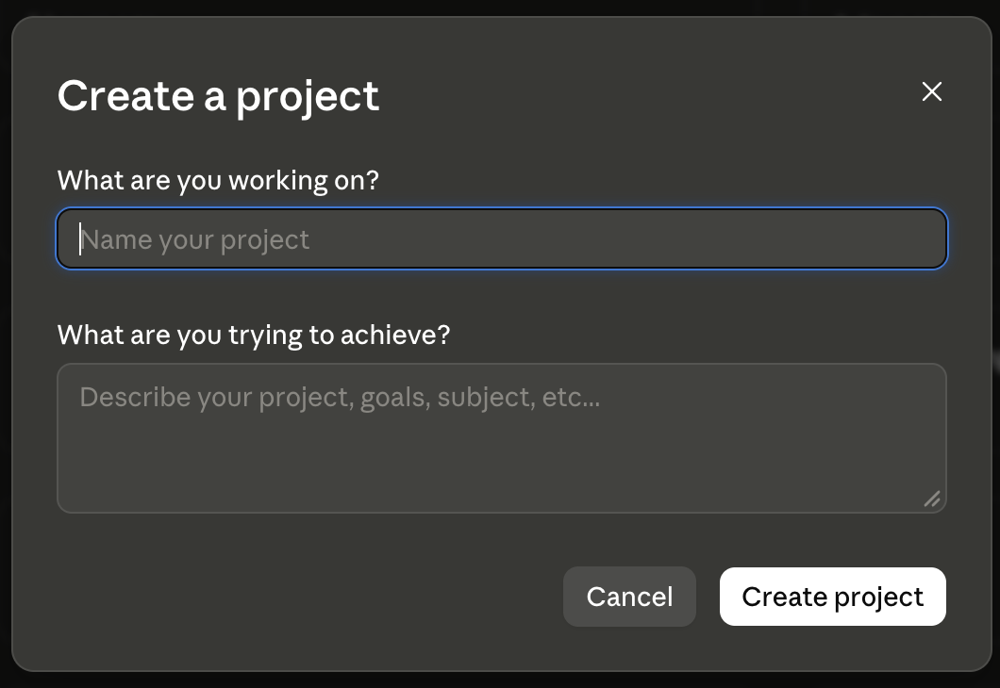
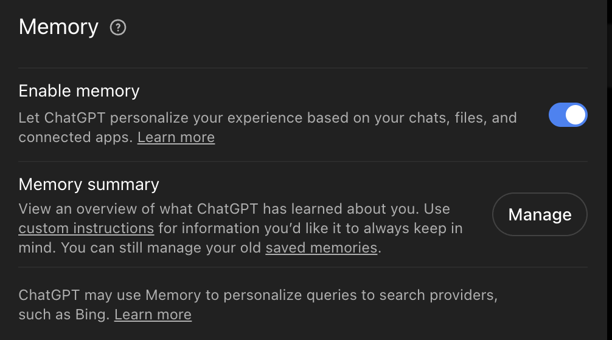
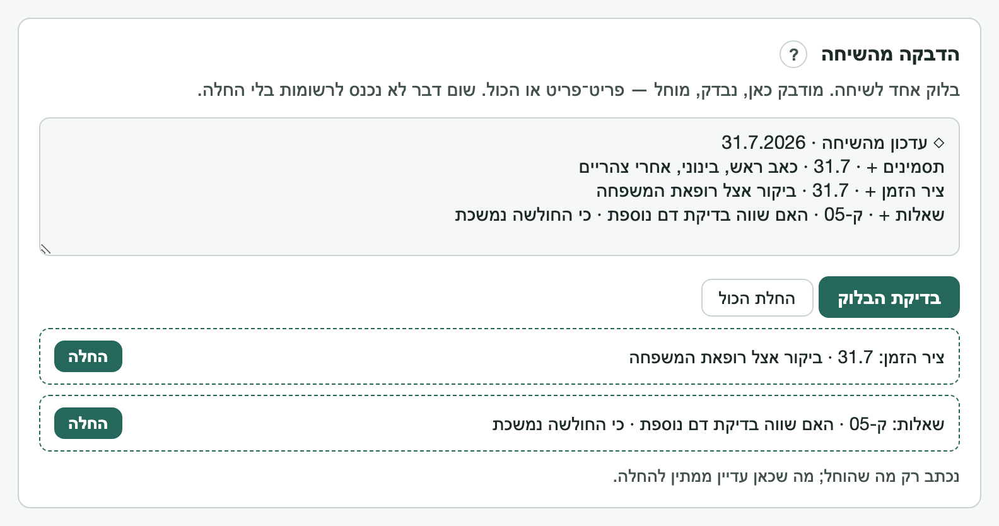
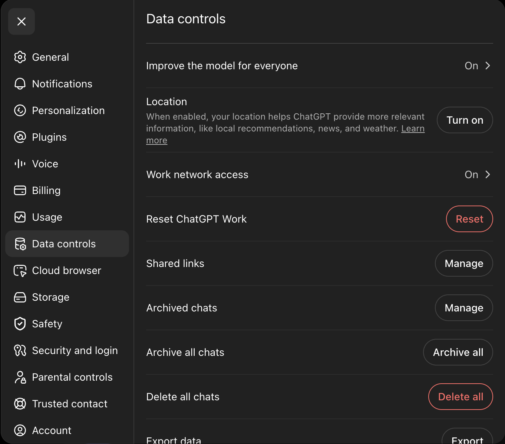

מדריכי התקנהSetup guides
כל מדריך עומד בפני עצמו. לא בטוחים מאיפה להתחיל? Claude או ChatGPT — מה שכבר יש לכם. Each guide stands alone. Not sure where to start? Claude or ChatGPT — whichever you already have.
מה אפשר לבקש ממנוWhat you can ask it to do
כל יכולת נכנסת לפעולה מעצמה ברגע המתאים — אין שמות לזכור ואין תפריט לנווט. זו התמונה המלאה, לפי מצב: Each ability steps in on its own at the right moment — no names to remember, no menu to navigate. Here is the full picture, grouped by situation:
- כשמתחילים, או כשאין כוח לסדר: ריאיון פתיחה עדין · לאסוף דברים בלי שום מבנה (מילים, תמונות, חצאי משפטים) · להפוך ערימת רשימות לתיעוד מסודר, אחר כך · לעדכן שיחה חדשה על מה שהיה · לסגור שיחה ולהמשיך בחדשה, בלי לאבד כלום. Getting started, or when organizing is too much: a gentle opening interview · just collect things with no structure (words, photos, half-sentences) · turn a pile of notes into an organized record, later · catch a new conversation up on where things stood · close a chat and carry on in a new one, with nothing lost.
- לשמור על התיעוד חי: צ׳ק־אין קצר על איך שלומכם · לרשום אירוע או תסמין בשורה · לסכם תקופה — מה השתנה מאז · טבלת תרופות ברורה. Keeping your record current: a short check-in on how you are doing · log an event or symptom in a line · sum up a stretch of time — what changed · a clear medications chart.
- סביב ביקור: לבנות שאלות, כל אחת עם הנימוק שלה · דף הכנה של עמוד אחד · הכנה מהירה כשהתור בעוד יום־יומיים · תחקיר קצר מיד אחרי הביקור. Around an appointment: build questions, each with its reasoning · a one-page prep sheet · fast prep when the visit is a day or two away · a quick debrief right after.
- בירור והקשר מקצועי: לחקור שאלה עם מקורות מסומנים לפי סוג · להבין טופס או מסמך (טופס 17, הפניות) · להכין משהו להביא לרופא/ה או לאיש מקצוע שסומכים עליו. Digging deeper & professional context: research a question with sources labeled by type · make sense of a form or document (Tofes 17, referrals) · prepare something to bring to a doctor or a trusted clinician.
לא צריך לזכור את זה — פשוט מספרים מה קורה, והעוזר מציע את הצעד המתאים כשמגיע הרגע. No need to remember any of this — just tell it what is going on, and the assistant offers the right step when the moment comes.
התקנה ב־ClaudeSetup in Claude
יש שתי דרכים טובות, ולא צריך לבחור מראש נכון: אפשר להתחיל בקלה ולעבור אחר כך — הרשומות עוברות איתכם. There are two good ways in, and no need to choose right the first time: start light and move later — the records move with you.
דרך א — שהעוזר יקים בשבילכם (Claude Code / Cowork)Way one — let the assistant set it up (Claude Code / Cowork)
הדרך הפשוטה. מורידים את קובץ ה־zip ומדביקים שורה אחת — והעוזר עושה את השאר: מחלץ, מקים, ומתחיל את הריאיון. אין מה לחלץ ידנית ואין מה להעביר. The simplest path. Download the zip and paste one line — the assistant does the rest: extract, set up, and start the interview. Nothing to unzip by hand, nothing to move.
- מתקינים את אפליקציית Claude למחשב (או Claude Code) ומתחברים.Install the Claude desktop app (or Claude Code) and sign in.
- מורידים את חבילת ה־zip מדף הבית, ומשאירים אותה בתיקיית ההורדות — אין צורך לחלץ בעצמכם.Download the package zip from the home page and leave it in your Downloads — no need to extract it yourself.
- פותחים שיחה ב־Claude Code או ב־Cowork ומדביקים את השורה הזאת:Open a conversation in Claude Code or Cowork and paste this line:
מצא/י את הקובץ advolog.zip בתיקיית ההורדות, חלץ/י אותו לתיקייה חדשה, ואז קרא/י את הקובץ CLAUDE.md שבתוכה ופעל/י לפיו — הקם/י לי את הכלי ולווה/י אותי צעד־צעד בריאיון הפתיחה.
Find advolog.zip in my Downloads folder, unzip it into a new project folder, then read the CLAUDE.md file inside and follow it — set it up for me and walk me through onboarding, one step at a time.
זהו. העוזר מחלץ את הקובץ, קורא את המפה בעצמו, ומתחיל ללוות אתכם — שאלה אחת בכל פעם — ושומר את הרשומות ישר בתיקייה, כל שמירה בשורה רגועה אחת. That is it. The assistant extracts the file, reads the map itself, and starts walking you through — one question at a time — saving records straight into the folder, each save in one calm line.
מעדיפים ידנית? מורידים, מחלצים (לחיצה ימנית ← «חלץ הכול» בווינדוס, לחיצה כפולה במק), ופותחים ב־Claude את התיקייה שחולצה. העוזר קורא את המפה משם בעצמו. Prefer to do it by hand? Download, extract (right-click ← "Extract All" on Windows, double-click on Mac), and open the extracted folder in Claude. The assistant reads the map itself from there.
דרך ב — פרויקט באתר (claude.ai)Way two — a project on claude.ai (web)
- נכנסים ל־claude.ai ומתחברים לחשבון (חינמי מספיק להתחלה).Go to claude.ai and sign in (the free tier is fine to start).
- בתפריט הצד: Projects ← New project. שם חופשי — למשל «התיק הרפואי שלי».In the side menu: Projects ← New project. Any name — "My medical file," for example.
- בהגדרות הפרויקט מאתרים את אזור ההנחיות (Instructions).In the project settings, find the instructions area.
- מדביקים שם את כל התוכן של
package/prompts/core-map.md.Paste the entire content ofpackage/prompts/core-map.mdthere. - באזור הקבצים (Project knowledge) מעלים את קובצי
package/prompts/skills/ואת שלושת קובציpackage/he/— אפשר לגרור את כולם יחד.In the project files area (Project knowledge), upload thepackage/prompts/skills/files and the threepackage/he/files — drag them all at once. - שיחה חדשה בתוך הפרויקט, וכותבים שלום — או פשוט מתחילים לספר. הריאיון יוביל משם, שאלה אחת בכל פעם.Open a new chat inside the project and say hello — or just start telling. The interview leads from there, one question at a time.

חלופה בלי שום התקנה: שיחה רגילה + הדבקת פרומפט הפתיחה. גרסה קלה ושלמה, בלי קבצים. The no-install alternative: a regular chat + pasting the starter prompt. A light, complete version, no files.
איפה הרשומות? קובצי הרשומות נשמרים אצלכם במחשב, בתיקייה אחת שבחרתם, והשיחה מלווה כל שמירה — או שפותחים את dashboard.html מאותה תיקייה והוא מכניס את העדכונים בלחיצה (מדריך הלוח). בנייד אפשר לנהל את הגרעין בתוך השיחה ולהעביר לקבצים כשמגיעים למחשב.
Where are the records? The record files live on your machine, in one folder you choose, and the conversation walks every save with you — or open dashboard.html from that folder and it applies updates on a click (dashboard guide). On mobile, keep the seed in the conversation and move it to files at a computer.
יחידות מיומנות (בהתקנה במחשב): בהתקנה במחשב (Claude Code / Cowork) אפשר גם «להתקין» יחידות כך שיופעלו אוטומטית. אין צורך מראש: כשיחידה תהיה רלוונטית, העוזרת תציע ותלווה את ההתקנה צעד־צעד. Skill units (in a computer install): in a computer install (Claude Code / Cowork), you can also "install" units so they trigger on their own. Nothing to do up front: when a unit becomes relevant, the assistant offers it and walks the install step by step.
איזה מודל, ובאיזה מאמץWhich model, at what effort
- רישום יומיומי (צ׳ק־אין, רישום אירוע, קליטה): Sonnet · Medium. Medium היא ברירת המחדל באפליקציה — לא צריך לגעת בכלום. Everyday logging (check-in, logging an event, capture): Sonnet · Medium. Medium is the default in the app — nothing to touch.
- הכנה לביקור וסיכומים (דף הכנה, טבלת תרופות, סיכום תקופה): Sonnet · High. בתוכנית בתשלום אפשר גם Opus. Visit prep and summaries (prep sheet, medications chart, interval summary): Sonnet · High. On a paid plan, Opus works too.
איך משנים: לוחצים על שם המודל ליד כפתור השליחה ← Effort ← בוחרים רמה. אם האפשרות לא מופיעה אצלכם, ממשיכים עם מה שיש — הכול עובד גם כך. שמות המודלים והרמות מתחלפים; נבדק מול דפי העזרה של Claude ב־1.10.2026. To change it: click the model name next to the send button ← Effort ← pick a level. If you do not see the option, carry on with what you have — everything still works. Model and level names change; checked against Claude's help pages on 1.10.2026.
העלאת מסמכים וצילומיםUploading documents and photos
- לפני כל העלאה: חותכים או מכסים את מספר תעודת הזהות. הכי פשוט — הצנזור החזותי, או פס נייר על המספר לפני שמצלמים. הכלי ממילא לא צריך את המספר. Before any upload: crop or cover the ID number (teudat zehut). The simplest way is the visual censor, or a strip of paper over the number before you photograph. The tool never needs it.
- PDF סרוק נקרא במלואו עד 100 עמודים. בקובץ עד 100 עמודים Claude קורא גם את הטקסט וגם את מה שמופיע כתמונה — ולכן גם מכתב שחרור סרוק. בקובץ ארוך יותר (עד 1,000 עמודים) נקרא הטקסט בלבד; מסמך סרוק ארוך כדאי לפצל. A scanned PDF is read in full up to 100 pages. In a file of up to 100 pages Claude reads the text and whatever appears as an image — so a scanned discharge letter too. In a longer file (up to 1,000 pages) only the text is read; split a long scanned document.
קובץ להגיש לרופא/ה — Claude DocsA file to hand the doctor — Claude Docs
בתוכניות Pro ו־Max (התכונה בבטא, ואינה כלולה בתוכנית החינמית), דף ההכנה לביקור וטבלת התרופות נוצרים כ־Doc: מסמך שנפתח לצד השיחה, וממנו מייצאים קובץ: בכפתור Export בוחרים Word או PDF. כך מגישים לרופא/ה קובץ, לא צילום מסך של שיחה. On Pro and Max plans (the feature is in beta and not part of the Free plan), the visit prep sheet and the medications chart are produced as a Doc: a document that opens beside the chat, from which you export a file: press Export and choose Word or PDF. You hand the doctor a file, not a screenshot of a chat.
ה־Doc פרטי עד שמשתפים אותו — וקישור שיתוף נמצא במרחק לחיצה אחת. מי שמחזיק בקישור ומחובר לחשבון Claude יכול לפתוח את המסמך. לרופא/ה פשוט ובטוח יותר לייצא קובץ ולהגיש אותו; ולפני כל שיתוף — רשימת הבדיקה. A Doc is private until you share it — and a shared link is one tap away. Anyone who holds the link and is signed in to a Claude account can open the document. For the doctor, exporting a file and handing it over is simpler and safer; and before any sharing — the checklist.
בנייד אפשר לצפות ב־Doc, אבל לא לערוך אותו ולא לשנות את הגדרות השיתוף. בתוכנית החינמית הדף נמסר כמו עד היום: קובץ מלא אחד, לשמירה בתיקיית reports ולהדפסה.
On mobile you can view a Doc, but not edit it or change its sharing settings. On the Free plan the sheet arrives as before: one complete file to save in the reports folder and print.
שיחה חדשה בתוך הפרויקטA new chat inside the project
אחרי רישום, או אחרי שתיים־שלוש משימות, העוזרת תציע לפתוח שיחה חדשה. הסיבה, בשורה אחת: שיחות ארוכות נעשות כבדות — בשלב מסוים Claude מסכם מעצמו את החלקים המוקדמים, או שהשיחה מגיעה למגבלת האורך שלה, וכך או כך פרטים מתחילים להישמט. שום דבר לא הולך לאיבוד: הרשומות שלכם בקבצים, לא בשיחה. לפני המעבר העוזרת כותבת פתק מסירה קצר, והשיחה הבאה קוראת אותו ראשון. After a log entry, or after two or three tasks, the assistant will suggest starting a new chat. The reason, in one line: long chats get heavy — at some point Claude summarizes the early parts on its own, or the chat reaches its length limit, and either way details start to slip. Nothing is lost: your records are in your files, not in the chat. Before you move, the assistant writes a short handoff note, and the next chat reads it first.
באתר: נכנסים לפרויקט ← New chat בתוכו, ומדביקים את פתק המסירה כהודעה הראשונה. במחשב: שיחה חדשה על אותה תיקייה — הפתק נשמר שם כקובץ handoff.md, והעוזרת קוראת אותו לבד. בשני המקרים מילה אחת מספיקה: «תתעדכני» — והיא תספר איפה עמדנו.
On the web: open the project ← New chat inside it, and paste the handoff note as the first message. On the desktop: a new chat on the same folder — the note is saved there as handoff.md, and the assistant reads it on her own. Either way one word is enough: "catch up" — and she will say where things stood.
הערה חשובה על «זיכרון» (Memory)An important note on Memory
גם ל־Claude יש זיכרון חוצה־שיחות, והוא פועל כברירת מחדל — גם בתוכנית החינמית. לרשומה רפואית עדיף מקור אמת אחד: הקבצים שלכם. Claude has cross-conversation memory too, and it is on by default — on the Free plan as well. A medical record wants one source of truth: your files.
- לכל פרויקט זיכרון נפרד. מה שנאמר בפרויקט של התיק הרפואי נשמר בזיכרון של אותו פרויקט, בנפרד מפרויקטים אחרים ומשיחות שמחוץ לפרויקטים. Each project has its own memory. What is said in the medical project is kept in that project's memory, separate from other projects and from chats outside projects.
- בריאות, ונושאים רגישים אחרים, לא נכנסים לזיכרון כברירת מחדל. ב־Settings ← Memory יש מתג בשם «Include sensitive topics in memory». ההמלצה שלנו: להשאיר אותו כבוי. הקבצים שלכם הם הרשומה. Health, and other sensitive topics, stay out of memory by default. Settings ← Memory has a switch called "Include sensitive topics in memory". Our recommendation: leave it off. Your files are the record.
- למלווים, במילים פשוטות: מי שמדליק את המתג הזה מאפשר ל־Claude לשמור בזיכרון את האבחנה והתרופות של קרוב המשפחה. בשיחות רגילות, מחוץ לפרויקט, הזיכרון הזה מלווה כל שיחה בחשבון — גם שיחות שאין להן שום קשר לתיק. זה מידע של אדם אחר; עדיף שיישאר בקבצים. For caregivers, plainly: turning that switch on lets Claude keep your relative's diagnosis and medications in memory. In regular chats, outside a project, that memory comes along to every chat on the account — including chats that have nothing to do with the record. It is another person's information; better that it stays in the files.
- שיחות אינקוגניטו (Incognito) אינן זמינות בתוך פרויקטים — רק בשיחות שמחוץ לפרויקט. רוצים שיחה אחת בלי זיכרון? בשיחה חדשה, לפני ההודעה הראשונה: «+» ← מכבים Memory. ואפשר להשהות את הזיכרון כולו ב־Settings ← Memory. Incognito chats are not available inside projects — only in chats outside a project. Want one chat with no memory? In a new chat, before the first message: "+" ← turn Memory off. You can also pause memory entirely in Settings ← Memory.
התקנה ב־ChatGPTSetup in ChatGPT
אותה חבילה, אותם קבצים, אותם כללים — הכלי נבנה מודל־אגנוסטי. שתי דרכים, בדיוק כמו ב־Claude. Same package, same files, same rules — the tool is built model-agnostic. Two ways in, same as Claude.
דרך א — שהעוזר יקים בשבילכם (אפליקציית ChatGPT עם גישה לתיקייה, או Codex)Way one — let the assistant set it up (ChatGPT app with folder access, or Codex)
אם ה־ChatGPT שלכם יודע לעבוד עם תיקייה במחשב (אפליקציית המחשב), או שאתם עובדים ב־Codex — זו אותה שורה כמו ב־Claude, והעוזר מחלץ, מקים ומתחיל את הריאיון. הוא קורא את הקובץ AGENTS.md שבחבילה (תוכן זהה לנקודת הכניסה של Claude).
If your ChatGPT can work with a folder on your computer (the desktop app), or you use Codex — it's the same one line as Claude, and the assistant unzips, sets up, and starts the interview. It reads the package's AGENTS.md (identical content to the Claude entrypoint).
- מורידים את חבילת ה־zip מדף הבית, ומשאירים אותה בתיקיית ההורדות.Download the package zip from the home page and leave it in your Downloads.
- פותחים שיחה באפליקציית ChatGPT שיכולה לפתוח תיקייה (או ב־Codex) ומדביקים:Open a conversation in a folder-capable ChatGPT app (or in Codex) and paste:
מצא/י את הקובץ advolog.zip בתיקיית ההורדות, חלץ/י אותו לתיקייה חדשה, ואז קרא/י את הקובץ AGENTS.md שבתוכה ופעל/י לפיו — הקם/י לי את הכלי ולווה/י אותי צעד־צעד בריאיון הפתיחה.
Find advolog.zip in my Downloads folder, unzip it into a new project folder, then read the AGENTS.md file inside and follow it — set it up for me and walk me through onboarding, one step at a time.
דרך ב — פרויקט באתר (chatgpt.com)Way two — a project on chatgpt.com (web)
- נכנסים ל־chatgpt.com ומתחברים.Go to chatgpt.com and sign in.
- בתפריט הצד: Projects ← פרויקט חדש. שם חופשי.Side menu: Projects ← new project. Any name.
- מעלים לקובצי הפרויקט קובץ אחד בלבד:
package/advolog-chatgpt-bundle.md— קובץ יחיד שמאגד את כל החבילה (המפה, השכבה העברית, שש־עשרה היחידות ופרומפטי המשימות), כדי לעקוף את מגבלת מספר הקבצים (ChatGPT Free מתיר מעט קבצים לפרויקט). Upload one file to the project:package/advolog-chatgpt-bundle.md— a single file combining the whole package (the map, the Hebrew layer, all sixteen abilities, and the task prompts), so you never hit the file-count limit (ChatGPT Free allows only a few files per project). - בשדה ההנחיות (Instructions) כותבים שורה אחת: «קראי את הקובץ advolog-chatgpt-bundle.md במלואו לפני כל תגובה ופעלי לפיו; החלק הראשון, המפה, קובע על כל סתירה». In the Instructions field write one line: "Read advolog-chatgpt-bundle.md in full before any reply and follow it; the first section, the map, wins on any conflict."
- שיחה חדשה בתוך הפרויקט — ומתחילים לדבר. אין נוסח פתיחה נכון.A new chat inside the project — and start talking. There is no correct opening line.
חלופה בלי שום התקנה: שיחה רגילה + פרומפט הפתיחה. The no-install alternative: a regular chat + the starter prompt.
איזה מודל, ובאיזה מצב חשיבהWhich model, in which thinking mode
- רישום יומיומי (צ׳ק־אין, רישום אירוע, קליטה): Instant — ברירת המחדל. לא צריך לגעת בכלום. Everyday logging (check-in, logging an event, capture): Instant — the default. Nothing to touch.
- הכנה לביקור וסיכומים (דף הכנה, טבלת תרופות, סיכום תקופה): בתוכנית החינמית וב־Go — לוחצים Think לפני ששולחים את הבקשה. ב־Plus וב־Pro — בוחרים High בבורר החשיבה. Visit prep and summaries (prep sheet, medications chart, interval summary): on Free and Go — press Think before sending the request. On Plus and Pro — choose High in the thinking picker.
חשוב למי שב־Plus או ב־Pro: Instant כבר לא עובר לבד למצב חשיבה כשהבקשה מורכבת. מי שרוצה יותר חשיבה בוחר בה ידנית, בכל פעם. שמות המודלים והמצבים מתחלפים; נבדק מול דפי העזרה של OpenAI ב־1.10.2026. If you are on Plus or Pro: Instant no longer switches to thinking on its own when a request is complex. If you want more thinking, choose it by hand, each time. Model and mode names change; checked against OpenAI's help pages on 1.10.2026.
העלאת מסמכים וצילומיםUploading documents and photos
- לפני כל העלאה: חותכים או מכסים את מספר תעודת הזהות. הכי פשוט — הצנזור החזותי, או פס נייר על המספר לפני שמצלמים. Before any upload: crop or cover the ID number (teudat zehut). The simplest way is the visual censor, or a strip of paper over the number before you photograph.
- מכתב סרוק מעלים כתמונה, לא כ־PDF. מקובץ PDF, ChatGPT קורא רק את הטקסט הדיגיטלי ומתעלם מהתמונות שבתוכו (בכל התוכניות חוץ מ־Enterprise). מכתב שחרור סרוק הוא בעצם תמונה בתוך PDF — ולכן, כשמעלים אותו כ־PDF, הוא פשוט בלתי נראה. מצלמים את העמוד או שומרים אותו כתמונה (JPG / PNG), ומעלים את התמונה. Upload a scanned letter as a photo, not as a PDF. From a PDF, ChatGPT reads only the digital text and discards the images inside it (on every plan except Enterprise). A scanned discharge letter is really an image inside a PDF — so uploaded as a PDF it is simply invisible. Photograph the page or save it as an image (JPG / PNG), and upload the image.
- בתוכנית החינמית: 3 העלאות קבצים ביום. כדאי לבחור מראש מה מעלים; מה שלא נכנס היום יחכה למחר, ואפשר גם פשוט להקליד את השורות החשובות. On the Free plan: 3 file uploads a day. Choose in advance what to upload; what does not fit today can wait for tomorrow, or simply type in the lines that matter.
הלוח נשאר קובץ במחשב — לא ChatGPT Site. אל תהפכו את הלוח ל־Site: Site אפשר לפרסם לכל מי שברשת, ושיחות שבהן יוצרים או עורכים Site עשויות לשמש לאימון המודל כשההגדרה «Improve the model for everyone» דלוקה. גם דף ההכנה לביקור נשאר כמו עד היום: קובץ מלא אחד, לשמירה ולהדפסה. The dashboard stays a file on your computer — not a ChatGPT Site. Do not turn the dashboard into a Site: a Site can be published to anyone on the internet, and chats in which you create or edit a Site may be used for model training when "Improve the model for everyone" is on. The visit prep sheet also stays as it was: one complete file, to save and print.
הערה חשובה על «זיכרון» (Memory)An important note on Memory
ל־ChatGPT יש זיכרון חוצה־שיחות. לרשומה רפואית עדיף מקור אמת אחד — הקבצים שלכם: בבדיקות שלנו זוהה מקרה שבו ידע כללי «מהזיכרון» התערבב בטענות ממקורות, וההנחיות דורשות שכל מספר וסף יגיעו רק ממקור שנשמר באותה ריצה. ההמלצה שלנו לעבודה רגישה: זיכרון ברמת הפרויקט בלבד (Project-only memory) — כך התיק הרפואי לא מושך מהזיכרון הכללי ולא מזין אליו. אפשר לבחור בו ברגע יצירת הפרויקט, וגם לשנות אחר כך בפרויקט קיים שלא שותף עם אחרים: פותחים את הפרויקט ← תפריט שלוש הנקודות (•••) ← Project settings ← תחת Memory בוחרים Project-only memory ← Save. השינוי עשוי להיכנס לתוקף רק אחרי כמה שעות; אין צורך ליצור פרויקט חדש. לחלופין אפשר לכבות זיכרון לגמרי (Settings ← Personalization ← Memory). העיקרון — הרשומה גוברת על הזיכרון. ChatGPT has cross-conversation memory. A medical record wants one source of truth — your files: our testing caught a case where general "memory" knowledge blended into sourced claims, and the instructions require every number and threshold to come only from a source retained in that run. Our recommendation for sensitive work: project-only memory — so the medical project neither draws from nor feeds your general account memory. You can choose it when creating the project, and also change it later on an existing project that is not shared: open the project ← the three-dot menu (•••) ← Project settings ← under Memory choose Project-only memory ← Save. The change may take a few hours to take effect; there is no need to create a new project. Or turn Memory off entirely (Settings ← Personalization ← Memory). The principle — the record outranks the memory.

שיחה חדשה בתוך הפרויקטA new chat inside the project
אחרי רישום, או אחרי שתיים־שלוש משימות, העוזרת תציע לפתוח שיחה חדשה. הסיבה, בשורה אחת: שיחות ארוכות נעשות כבדות, ופרטים מוקדמים מתחילים להישמט. שום דבר לא הולך לאיבוד: הרשומות שלכם בקבצים, לא בשיחה. לפני המעבר העוזרת כותבת פתק מסירה קצר. After a log entry, or after two or three tasks, the assistant will suggest starting a new chat. The reason, in one line: long chats get heavy, and early details start to slip. Nothing is lost: your records are in your files, not in the chat. Before you move, the assistant writes a short handoff note.
Projects ← הפרויקט שלכם ← New chat בתוכו, ומדביקים את פתק המסירה כהודעה הראשונה. מילת פתיחה: «תתעדכני». Projects ← your project ← New chat inside it, and paste the handoff note as the first message. Opening word: "catch up."
הלוח — המדריך המלאThe dashboard — the full guide
הלוח הוא קובץ אחד בשם dashboard.html שיושב בתיקיית הרשומות שלכם. הוא לא אתר, לא אפליקציה להתקנה ולא שירות: פותחים אותו בדפדפן, והוא מראה מה יש ברשומות ומכניס לתוכן עדכונים מהשיחה — רק אחרי שאישרת. הכול קורה אצלכם במחשב. שום דבר לא נשלח לשום מקום, אף פעם: אין רשת, אין חשבון, אין שרת.
The dashboard is one file named dashboard.html sitting in your records folder. It is not a website, not an app to install, not a service: you open it in a browser, it shows what is in the records and applies updates from the conversation — only after you approve. Everything happens on your machine. Nothing is ever sent anywhere: no network, no account, no server.
חשוב לומר כבר עכשיו: הלוח הוא נוחות, לא חובה. הכול עובד גם בשיחה בלבד. אם משהו כאן מרגיש מסובך, אפשר פשוט להמשיך לדבר עם העוזר והוא ילווה כל שמירה, קובץ אחד בכל פעם. Worth saying up front: the dashboard is a convenience, not a requirement. Everything also works in conversation alone. If any of this feels complicated, just keep talking to the assistant and it will walk every save with you, one file at a time.
איך זה בנויHow it is built
הרשומות שלכם הן קבצי טקסט פשוטים בתיקייה אחת: תרופות, ציר זמן, יומן תסמינים, שאלות פתוחות ועוד. אפשר לפתוח כל אחד מהם בכל עורך טקסט, בלי שום תוכנה מיוחדת, והם קריאים לבני אדם. השיחה עם העוזר היא המוח: שם מספרים מה קרה, שואלים שאלות, מכינים דוחות. הלוח הוא החלון והידיים: מראה מה כתוב, ומכניס את מה שהשיחה הציעה. Your records are plain text files in one folder: medications, timeline, symptom log, open questions, and more. Any text editor opens them, no special software, and they read as human documents. The conversation is the brain: there you tell what happened, ask questions, prepare reports. The dashboard is the window and the hands: it shows what is written, and applies what the conversation proposed.
החלוקה הזאת מכוונת. השיחה אף פעם לא נוגעת בקבצים שלכם בעצמה; היא מציעה, ואת או אתה מחליטים. שום דבר לא נכנס לרשומות בלי לחיצת אישור שלכם. That split is deliberate. The conversation never touches your files itself; it proposes, and you decide. Nothing enters the records without your approving click.
החיבור הראשון, צעד אחר צעדThe first connection, step by step
- ודאו ש־
dashboard.htmlיושב בתיקיית הרשומות. אם התקנתם עם שורת ההתקנה, הוא כבר שם. אם הורדתם zip ועוד לא חילצתם — לחלץ קודם (לחיצה ימנית ← «חלץ הכול» בווינדוס, לחיצה כפולה במק), והקובץ יהיה בתיקייה שחולצה. Make suredashboard.htmlsits in your records folder. If you installed with the one-line prompt, it already does. If you downloaded a zip and haven't extracted it, extract it first (right-click ← "Extract All" on Windows, double-click on Mac), and the file will be in the extracted folder. - פתחו את הקובץ בדפדפן שתומך בגישה לתיקיות — כרום, למשל. לרוב מספיקה לחיצה כפולה. אם נפתחה תוכנה אחרת: לחיצה ימנית ← «פתח באמצעות» ← הדפדפן. Open the file in a folder-capable browser — Chrome, for instance. A double-click usually does it. If another program opened: right-click ← "Open with" ← the browser.
- לחצו «בחירת התיקייה» ובחרו את התיקייה שבה יושב הקובץ — היא תיקיית הרשומות. הדפדפן ישאל אם לאשר גישה; זה האישור היחיד שהלוח צריך, והוא נשאר בתוך המחשב שלכם. אפשר גם פשוט לגרור את התיקייה אל החלון. Click "choose the folder" and pick the folder the file sits in — that is the records folder. The browser asks to approve access; that is the only approval the dashboard needs, and it stays inside your machine. Dragging the folder onto the window works too.
- זהו. שבעת קובצי הרשומות נוצרים אם הם עוד לא קיימים, ונקראים אם הם כבר שם. מהרגע הזה הלוח מציג את מה שבאמת כתוב בקבצים. That is it. The seven record files are created if they do not exist yet, and read if they do. From that moment the dashboard shows what is really written in the files.


אם הדפדפן לא מציע גישה לתיקיות, ממשיכים במסלול המלא דרך השיחה, שמלווה כל שמירה קובץ אחד בכל פעם, או פותחים את הלוח בדפדפן מחשב שתומך בגישה לתיקיות. שני כלי הפרטיות עובדים גם בלי חיבור. If the browser does not offer folder access, continue through the complete conversation path, which guides each save one file at a time, or open the dashboard in a folder-capable desktop browser. Both privacy tools work without a folder connection.
מעגל העבודה — פנימה והחוצהThe working loop — in and out
פנימה. בסוף שיחה (או כשמבקשים «תני לי בלוק עדכון»), השיחה נותנת בלוק טקסט אחד עם כל מה שחדש. מעתיקים, עוברים ללוח, מדביקים בפאנל «הדבקה מהשיחה» ולוחצים «בדיקת הבלוק». כל פריט מוצג בנפרד: מה הוא ולאן הוא הולך; מחילים פריט־פריט או «החלת הכול». עד שלא לחצתם החלה — שום דבר לא נכתב. In. At the end of a conversation (or on "give me an update block"), the conversation hands one text block with everything new. Copy it, switch to the dashboard, paste into the "paste from the conversation" panel, click "check the block." Each item shows separately: what it is and where it goes; apply item by item or "apply all." Until you click apply — nothing is written.
◇ עדכון מהשיחה · 31.7.2026 תסמינים + · 31.7 · כאב ראש, בינוני, אחרי צהריים ציר הזמן + · 31.7 · ביקור אצל רופאת המשפחה שאלות + · ק-05 · האם שווה בדיקת דם נוספת · כי החולשה נמשכת
כל שורה מתחילה בשם היעד (תסמינים, ציר הזמן, תרופות, שאלות, תיבת קליטה, פרופיל או ממצאים), אחר כך + ·, ואחר כך השורה עצמה — בדיוק כפי שתיכנס לקובץ. הדבקתם והלוח אומר שלא זוהו שורות? הכי פשוט לבקש מהשיחה: «תני לי את הבלוק שוב, בתבנית של הלוח». אם החלה נכשלת (למשל כי התיקייה זזה), הפריט נשאר ממתין ולא הולך לאיבוד.
Every line starts with the target name (symptoms, timeline, medications, questions, intake box, profile, or findings), then + ·, then the line itself — exactly as it will land in the file. Pasted and the dashboard says no update lines found? Simplest ask: "give me the block again, in the dashboard's format." If an apply fails (say the folder moved), the item stays pending and is not lost.


החוצה. בפתיחת שיחה חדשה, לוחצים «העתקת בלוק ההקשר» ומדביקים בהודעה הראשונה. השיחה מקבלת תמונת מצב קצרה שמכוונת אותה. חשוב לדעת: הבלוק מנווט, הוא לא נושא את כל התיק. ההמשכיות האמיתית מגיעה מכך שהרשומות עצמן זמינות לשיחה — בפרויקט (הקבצים מועלים כקובצי פרויקט וקיימים בכל שיחה חדשה בו), או בעבודה על תיקייה (השיחה קוראת את הקבצים ישירות). בשיחת אינטרנט רגילה בלי הקבצים, מדביקים גם את הרשומות הרלוונטיות, לא רק את הבלוק. Out. When opening a new conversation, click "copy the context block" and paste it as the first message. The conversation gets a short snapshot that orients it. Note: the block points the way, it does not carry the whole record. Real continuity comes from the records themselves being available to the conversation — in a project (the files are uploaded as project sources and persist across every new chat in it), or in folder-based work (the conversation reads the files directly). In a plain web chat without the files, paste the relevant records too, not just the block.

סיור בפאנליםA tour of the panels
- הדבקה מהשיחה — הלב. הבלוק נבדק כאן ומוחל בלחיצה. ליד כל פאנל כפתור «?» עם הסבר במקום.Paste from the conversation — the heart. The block is checked here and applied on a click. Every panel has a "?" button with help in place.
- הקשר חזרה לשיחה — התנועה ההפוכה, בלחיצה אחת.Context back to the conversation — the reverse motion, one click.
- תיבת קליטה — מה שנקלט ועוד לא סודר. המיון קורה בשיחה, כשנוח.Intake box — what was captured and not yet sorted. Sorting happens in conversation, when convenient.
- שאלות פתוחות — מרכז הכובד: מה שממתין לצוות המטפל, כל שאלה עם הנימוק שלה.Open questions — the center of gravity: what waits for the care team, each question with its reasoning.
- תרופות — האלרגיות תמיד בראש הקובץ ותמיד בפס העליון. דבר לא נמחק; גם מה שהופסק נשאר, עם הסיבה.Medications — allergies always top the file and the top strip. Nothing is deleted; stopped items stay, with the reason.
- יומן תסמינים — שורה ליום. ימים חסרים זה נורמלי; רופאים מחפשים תבנית, לא שלמות.Symptom log — a line per day. Missing days are normal; doctors look for a pattern, not completeness.
- ציר הזמן — מה קרה ומתי: ביקורים, ניסיונות ומה יצא מהם, מסמכים. החדש למעלה.Timeline — what happened and when: visits, attempts and their outcomes, documents. Newest on top.
- דוחות — מה שנשמר בתיקיית
reportsמופיע כאן. דוח חדש הוא הצעד היחיד ששומרים בעצמכם: השיחה מכינה את הקובץ המלא, ואתם שומרים — פעם אחת, בליווי שלה.Reports — whatever is saved in thereportsfolder shows here. A new report is the one step you save yourself: the conversation prepares the complete file, you save it — once, walked through.
שני כלי הפרטיותThe two privacy tools
צנזור חזותי — לתמונות של מסמכים, לפני שהן מגיעות לשיחה. טוענים צילום, משחירים באצבע או בעכבר את מה שלא צריך לצאת (שם, ת״ז, מספר תיק), נותנים שם חדש ומורידים עותק נקי. ההשחרה נצרבת בפיקסלים של העותק — אי אפשר להסיר אותה. המקור לא משתנה, ואותו לא מעלים. קובצי PDF לא נתמכים בגרסה הזאת — מצלמים את העמוד או עושים צילום מסך, וזה עובד מצוין. הכלי זמין גם כאן באתר, בלי החבילה. Visual censor — for document photos, before they reach a conversation. Load a photo, black out what must not leave (name, ID, file number) by finger or mouse, rename, download a clean copy. The redaction is burned into the copy's pixels — it cannot be removed. The original is untouched, and it is the copy you upload. PDFs are not supported in this version — photograph or screenshot the page instead, which works fine. The tool is also available here on the site, package or not.
ניקוי טקסט — לטקסט שעומד לצאת החוצה: סיכום לשיתוף, שאלה לפורום. הכלי מסמן לבדיקה את המזהים של מי שהרשומה עליו: תעודת זהות (עם בדיקת ספרת ביקורת), שם, כתובת מדויקת, מספרי תיק, טלפון ודוא״ל. כשהרשומה מנוהלת עבור מישהו אחר, המזהים המסומנים הם קודם כול שלו. סימון מיותר מבטלים בלחיצה; «העתקת העותק הנקי» מחליפה כל סימון פעיל בסוגריים, למשל [שם]. שמות רופאים ומוסדות נשארים בכוונה: מקור הטיפול הוא לא זהות המטופל או המטופלת. הבדיקה שלכם היא הקובעת — הכלי עוזר לעיניים, לא מחליף אותן. Text scrub — for text about to go out: a summary to share, a forum question. It marks, for your review, the record subject's identifiers: ID number (checksum-verified), name, exact address, file numbers, phone, email. When the record is kept for someone else, the marked identifiers are first of all theirs. Click an unneeded mark to clear it; "copy the clean version" replaces each active mark with brackets, e.g. [name]. Clinician names and institutions stay by design: the provenance of care is not the patient's identity. Your review decides — the tool helps the eyes, it does not replace them.

גיבוי ושחזורBackup and restore
«גיבוי — הורדת הכול» מוריד קובץ אחד מתוארך עם כל רשומות הטקסט. שומרים אותו במקום שני: ענן, החסן נייד, או מייל לעצמכם. שחזור הוא משימת שיחה: נותנים לשיחה את קובץ הגיבוי והיא בונה את הקבצים מחדש, אחד־אחד, בליווי מלא. תמונות ודוחות לא נכנסים לקובץ הגיבוי — אותם מגבים בהעתקת התיקייה כולה. "Backup — download everything" saves one dated file with all the text records. Keep it somewhere second: cloud, USB drive, or an email to yourself. Restore is a conversation task: hand the backup file to the conversation and it rebuilds the files one by one, fully walked. Photos and reports are not in the backup file — back those up by copying the whole folder.
מצב קליטה בלוחCapture mode and the dashboard
בתקופה קשה, כשאין כוח לסדר — מצב קליטה עובד גם כאן: מספרים לשיחה בלי שום מבנה, והיא שומרת הכול אצלה. כשמדביקים את בלוק העדכון, הרישומים נכנסים לתיבת הקליטה וממתינים. המיון קורה אחר כך, בשיחת שחזור, כשיש כוח. הלוח לא דורש כלום בזמן אמת. In a hard period, when there is no energy to organize — capture mode works here too: tell the conversation with no structure at all, and it holds everything. When the update block is pasted, the entries land in the intake box and wait. Sorting happens later, in a reconstruction session, when there is energy. The dashboard demands nothing in real time.
אם משהו לא עובדIf something does not work
- לחצתם «בדיקת הבלוק» ולא קרה כלום? כנראה הבלוק לא בתבנית שהלוח יודע לקרוא. הכי פשוט לחזור לשיחה ולבקש: «תני לי את בלוק העדכון שוב». (ואם בא לכם להבין למה — הלוח מחפש שורות שמתחילות בשם של קובץ יעד ואחריו
+ ·.)Clicked "check the block" and nothing happened? The block probably isn't in the format the dashboard reads. The simplest fix: go back to the conversation and ask, "give me the update block again." (If you'd like to know why — the dashboard looks for lines that start with a target file's name followed by+ ·.) - החלתם עדכון והוא נכשל? שום דבר לא אבד — הפריט פשוט ממתין. ודאו שתיקיית הרשומות עדיין במקומה, רעננו את הדף, והתחברו אליה שוב.Applied an update and it failed? Nothing is lost — the item is simply waiting. Make sure the records folder is still where it was, refresh the page, and reconnect to it.
- הלוח מבקש שוב את התיקייה? זה קורה מעצמו אחרי זמן־מה, וזה בסדר גמור. לוחצים «בחירת התיקייה» עוד פעם, והרשומות שלמות כמו שהיו.The dashboard asking for the folder again? That happens on its own after a while, and it's completely fine. Click "choose the folder" once more, and the records are intact as they were.
- פתחתם והמסך ריק? קרוב לוודאי שנבחרה בטעות תיקייה אחרת. התחברו שוב, והפעם בחרו את התיקייה שבה יושב
dashboard.html.Opened it and the screen is empty? Most likely a different folder got picked by mistake. Reconnect, and this time choose the folder thatdashboard.htmlsits in. - משהו אחר מוזר? הקבצים שלכם תמיד פתוחים לקריאה — אפשר להציץ בהם בכל עורך טקסט ולראות בדיוק מה כתוב בהם. ואם משהו נתקע, פשוט ספרו לשיחה מה קרה; היא יודעת לעזור.Something else odd? Your files are always open to read — you can peek at them in any text editor and see exactly what's written. And if something's stuck, just tell the conversation what happened; it knows how to help.
מה הלוח לא עושה: לא ניגש לרשת. לא שולח כלום לאף אחד. לא מוחק דבר לבד. לא מחליט במקומך. לא דורש ממך כלום כדי שהרשומות ימשיכו להיות שלכם — הן קבצים פשוטים בתיקייה שלכם, עם הלוח ובלעדיו. What the dashboard never does: touch the network. Send anything to anyone. Delete anything on its own. Decide for you. Require anything for the records to stay yours — they are plain files in your folder, dashboard or not.
ואל תהפכו את הלוח ל־ChatGPT Site. Site אפשר לפרסם לכל מי שברשת, ושיחות שבהן יוצרים או עורכים Site עשויות לשמש לאימון המודל כשההגדרה «Improve the model for everyone» דלוקה. הלוח נבנה לרוץ כקובץ מקומי אחד, בלי רשת — וזה מה ששומר את המידע הרפואי אצלכם. And do not turn the dashboard into a ChatGPT Site. A Site can be published to anyone on the internet, and chats in which you create or edit a Site may be used for model training when "Improve the model for everyone" is on. The dashboard is built to run as one local file, with no network — which is what keeps the medical information with you.
הליכי הפרטיות, פלטפורמה־פלטפורמהThe privacy walkthroughs, platform by platform
ההצעה לעבור על זה מגיעה כבר בהתקנה, וחוזרת פעם אחת לפני הייצוא הראשון. שתי דקות, פעם אחת. חשוב ביושר: המסכים משתנים מדי פעם, וההליך מנחה ולא מבטיח — הקובע הוא מה שמופיע אצלכם בחשבון. The offer to go over this arrives right at install, and repeats once before the first export. Two minutes, once. Said honestly: screens change now and then, and this walkthrough guides rather than guarantees — what appears in your account is what counts.
בחשבון ClaudeIn a Claude account
- נכנסים להגדרות החשבון (Settings) ← מחפשים את אזור הפרטיות או Data.Open account Settings ← find the privacy or Data area.
- שימוש בשיחות לאימון המודל: אם מופיעה בחשבון שלכם אפשרות כזו — מחליטים בה במודע. מי שמעדיף שהשיחות לא ישמשו לאימון, מכבה אותה. בחלק מסוגי החשבונות ברירת המחדל שונה; אם ההגדרה לא במקום המתואר — מחפשים «privacy» או «data» בהגדרות.Using conversations for model training: if such an option appears on your account — decide it consciously. Prefer your conversations not used for training? Turn it off. Defaults differ across account types; if the setting is not where described — search "privacy" or "data" in Settings.
- שווה להכיר גם את משך שמירת השיחות ואת אפשרות המחיקה, כפי שמוצגים בחשבון.Worth knowing the conversation-retention and deletion options too, as shown in the account.
בחשבון ChatGPTIn a ChatGPT account
- תמונת הפרופיל ← Settings ← Data Controls.Profile picture ← Settings ← Data Controls.
- «Improve the model for everyone»: אם ההגדרה מופיעה בחשבון שלכם — מחליטים בה במודע; מי שמעדיף שהשיחות לא ישמשו לאימון, מכבה. לא מוצאים? מחפשים «data» בהגדרות."Improve the model for everyone": if it appears on your account — decide it consciously; prefer not to feed training, turn it off. Not finding it? Search "data" in Settings.
- שווה להכיר שם גם את ייצוא הנתונים ומחיקת שיחות.Worth knowing the data-export and chat-deletion options there too.

עוד שלושה דברים, בשורה אחתThree more things, one line each
- חיבורי נתוני בריאות — ב־Claude וב־ChatGPT (Health) — זמינים כרגע רק בארצות הברית, ולכן אינם רלוונטיים בישראל. Advolog לא נשען עליהם: הרשומה היא הקבצים שלכם. Health-data integrations — in Claude and in ChatGPT (Health) — are currently available in the United States only, so they do not apply in Israel. Advolog does not rely on them: the record is your files.
- הכתבה קולית: איננו מבטיחים הכתבה בעברית — עברית אינה ברשימת שפות ההכתבה ש־Claude מפרסם, וב־ChatGPT לא בדקנו. אם היא לא מדייקת אצלכם — מקלידים, והכול עובד. Voice dictation: we do not promise Hebrew dictation — Hebrew is not on Claude's published list of dictation languages, and we have not tested it in ChatGPT. If it is not accurate for you — type, and everything works.
- Custom GPTs יוצאים משימוש (OpenAI מתכננת להפסיק אותם ב־11.12.2026). Advolog בנוי על Projects, לא על GPTs — שום דבר לא משתנה אצלכם. Custom GPTs are being retired (OpenAI plans to end them on 11.12.2026). Advolog is built on Projects, not GPTs — nothing changes for you.
ובכל מקרה, בלי קשר להגדרות: הכלי לא מבקש מזהים, וכל ייצוא עובר קודם את רשימת הבדיקה — מה בפנים, מה מסירים, לאן זה הולך. And regardless of settings: the tool never asks for identifiers, and every export passes the checklist first — what is inside, what to remove, where it goes.
מתכוני אוטומציהAutomation recipes
השכבה הכי מתחלפת בחבילה. תכונות תזמון של פלטפורמות משתנות בלי להודיע, ולכן כל בדיקה כאן עומדת גם כפרומפט להדבקה: מדביקים אותו בשיחה והעוזר מריץ את אותה הבדיקה, בלי תלות בשום תכונת תזמון. ההדבקה היא המסלול המובטח; התזמון הוא רק נוחות, למי שיש בחשבונו תכונת משימות מתוזמנות. The most change-prone layer in the package. Platform scheduling features change without notice, so each check here also stands as a prompt you paste: paste it into the conversation and the assistant runs the same check, with no dependence on any scheduling feature. Pasting is the guaranteed path; scheduling is just a convenience, for accounts that have a scheduled-tasks feature.
כל אוטומציה מוצעת בשיחה בכרטיס ברור (מה היא עושה, מה קוראת, מה כותבת, איך מכבים) ולא קיימת בלי הסכמה מפורשת. הפלט תמיד נוחת בתיבת הקליטה כהצעה — שום דבר לא נכנס לרשומות בלי אישור. Every automation is offered in conversation as a clear card (what it does, reads, writes, how to turn it off) and does not exist without explicit consent. Output always lands in the intake box as a proposal — nothing enters the records unapproved.
| מהWhat | הפרומפט להדבקה (המסלול המובטח)The prompt you paste (the guaranteed path) | תזמון, אם יש בחשבוןScheduling, where the account has it |
|---|---|---|
| סריקת מחקר וקהילותResearch & community sweep | package/prompts/twins/sweep-twin.mdהדבקה פעם בחודש; רובדי הראיות נאכפים; «אין חדש» היא תוצאה שלמה.Paste monthly; evidence tiers enforced; "nothing new" is a complete result. |
Claude: משימה מתוזמנת חודשית שמדביקה את הפרומפט, אם התכונה קיימת בחשבון. ChatGPT: משימה (Task) חודשית עם אותו פרומפט.Claude: a monthly scheduled task that pastes the prompt, where the feature exists. ChatGPT: a monthly Task carrying the same prompt. |
| בדיקת טריות התיקייהFolder freshness check | package/prompts/twins/freshness-twin.mdלרוב מיותר לתזמן — «תתעדכני» עושה את זה ממילא.Rarely worth scheduling — "catch up" already does it. |
כמו למעלה, אם בכלל.As above, if at all. |
| בדיקת יכולות ועדכוני הכליCapabilities & toolkit updates | package/prompts/twins/capabilities-twin.mdמקורות רשמיים בלבד, כל טענה מקושרת ומתוארכת, עד עשר שורות. אם יצאה גרסה חדשה של Advolog — סוקרת אותה, מסבירה מה כל שיפור יכול לתת לכם, ונותנת לבחור מה לאמץ; מחילה רק את הנבחר, גיבוי קודם, בלי לאבד רשומות (הסכימות רק מוסיפות).Official sources only, every claim linked and dated, ten lines max. If a newer Advolog version is out, it reviews it for you — explains what each improvement could do for you, lets you pick what to adopt, and applies only your picks, backup first, without losing your records (schemas only add). |
משימה חודשית, כנ"ל.A monthly task, as above. |
| סיכום סשן / מסירהSession wrap-up / handoff | package/prompts/twins/wrapup-twin.mdמופעל ידנית בסוף ישיבה, בכל רגע שרוצים. העוזרת מציעה את אותו הדבר מעצמה אחרי רישום או אחרי כמה משימות.Run manually at the end of a sitting, whenever you like. The assistant offers the same thing on her own after a log entry or a few tasks. |
לא מתוזמן — התנהגות שיחה.Not scheduled — conversational behavior. |